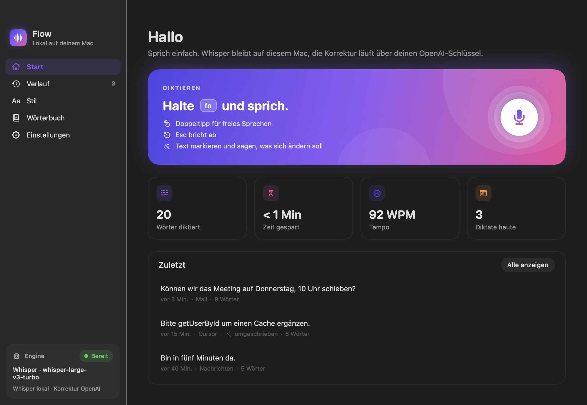
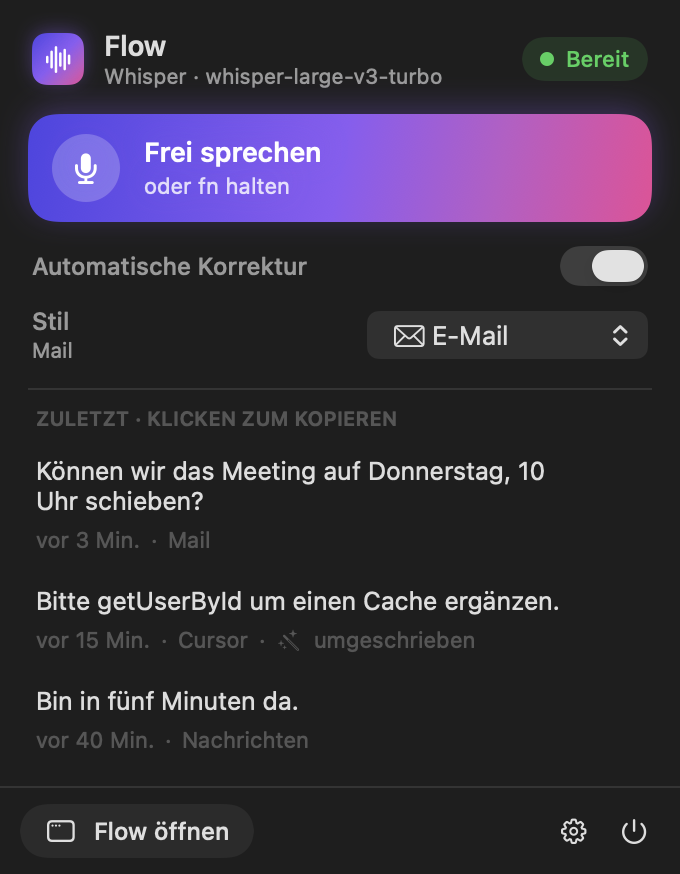
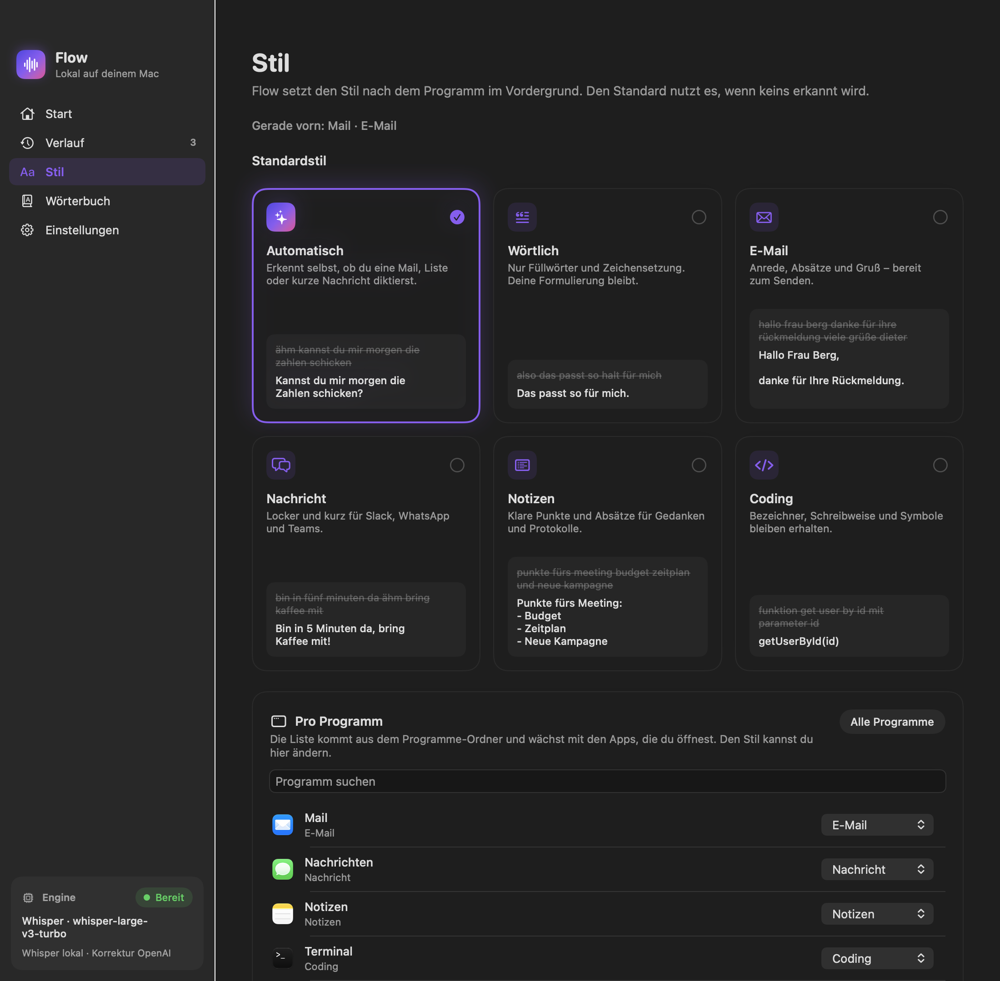
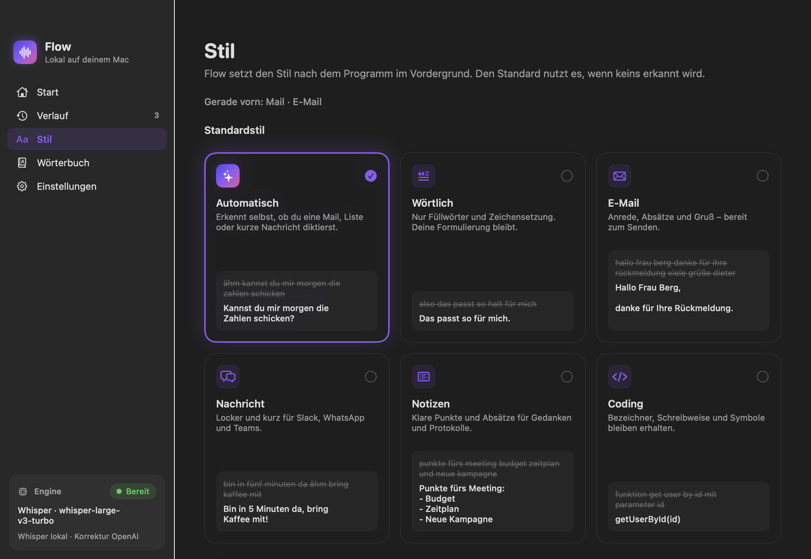
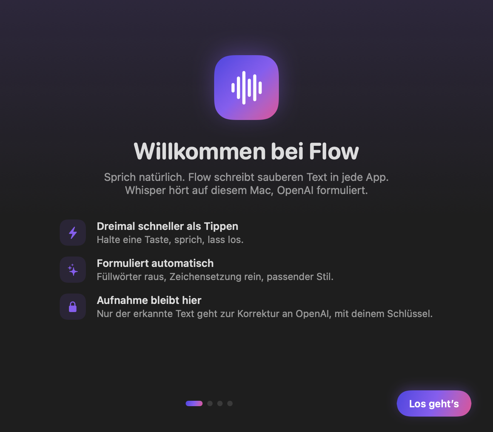
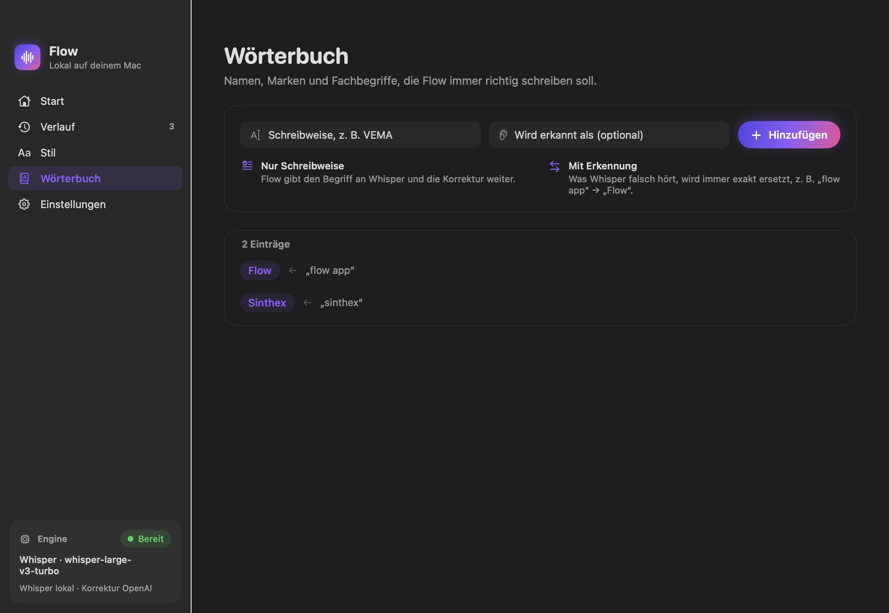
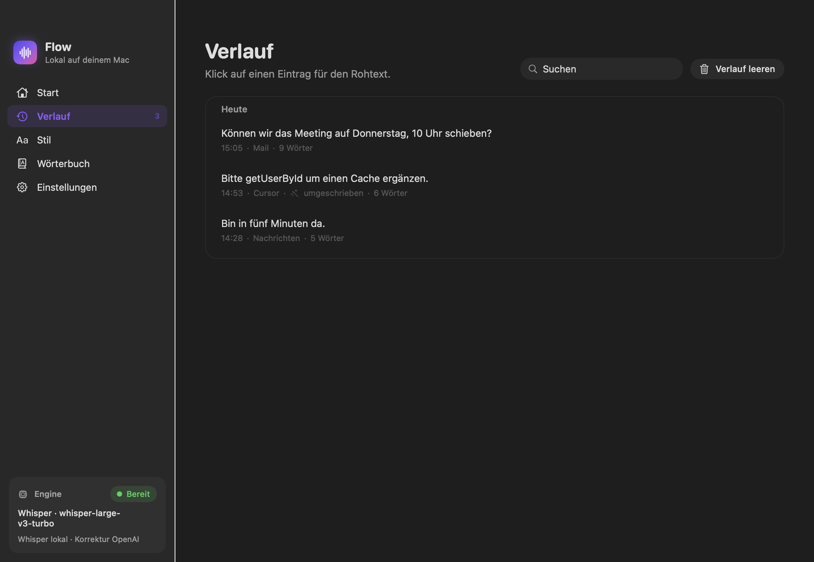
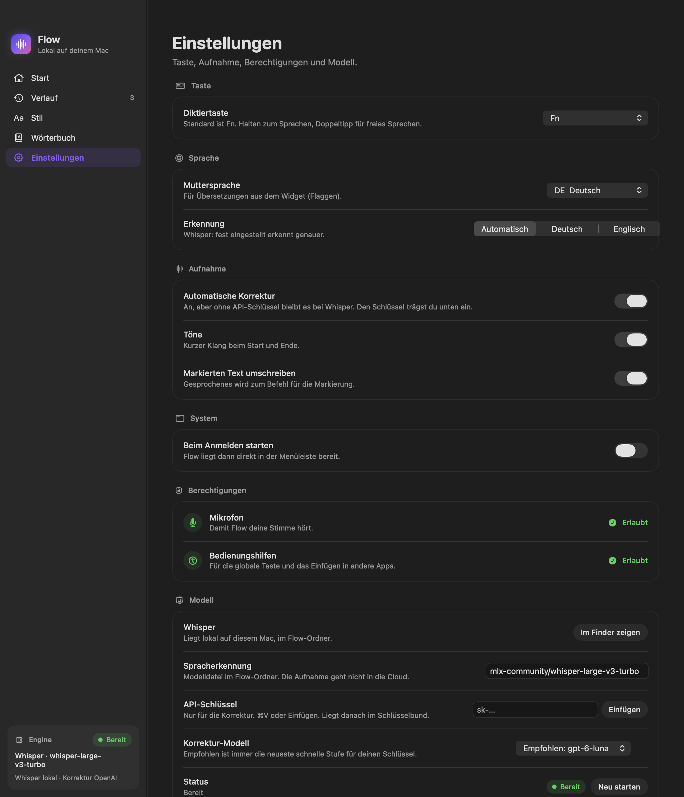

01
Whisper, lokal
Die Spracherkennung läuft mit Whisper auf dem Mac, über MLX auf Apple Silicon. Die Aufnahme geht dafür nicht ins Netz. Das Modell liegt im Flow-Ordner.
mlx-community/
Menüleisten-App für macOS · von Sinthex
Die Aufnahme bleibt auf dem Mac. Eine Korrektur über OpenAI ist optional und nutzt den eigenen Schlüssel, der nur im Schlüsselbund liegt.


So fühlt es sich an
Flow arbeitet in jedem Programm, in dem du tippen kannst. Kein Fenster wechseln, kein Text kopieren. Der Cursor steht, du sprichst, der Satz steht da.
Unten am Bildschirm erscheint eine kleine Pille mit Pegel und Zeit. Flow hört zu.
So, wie du redest. Mit Pausen, mit „äh“, mit Umwegen.
Der Text wird in das Feld eingesetzt, in dem der Cursor steht.
Gesagt
„äh kannst du mir morgen die zahlen schicken“
Eingesetzt
Kannst du mir morgen die Zahlen schicken?
Beispiel mit eingeschalteter Korrektur, Stil „Automatisch“.
Funktionen
Erkennen passiert auf deinem Mac. Formulieren passiert nur, wenn du es willst. Alles Weitere ist dazu da, dass der Text im richtigen Ton an der richtigen Stelle landet.
Die Spracherkennung läuft mit Whisper auf dem Mac, über MLX auf Apple Silicon. Die Aufnahme geht dafür nicht ins Netz. Das Modell liegt im Flow-Ordner.
mlx-community/
Füllwörter raus, Zeichensetzung rein, passender Ton. Dafür geht der erkannte Text an OpenAI, mit deinem eigenen Schlüssel. Flow empfiehlt das neueste schnelle Modell, das dein Schlüssel nutzen darf. Du kannst auch ein Modell fest einstellen. Ohne Schlüssel bleibt es beim Text von Whisper.
Empfohlen: neuestes schnelles Modell
Namen, Marken und Fachbegriffe, die immer richtig geschrieben werden sollen. Hört Whisper ein Wort regelmäßig falsch, trägst du auch das ein, und Flow ersetzt es exakt.
„flow app“ → Flow
Der Text landet im aktiven Feld, egal in welchem Programm. Ist dort schon Text markiert, wird das Gesprochene zur Anweisung: Markieren, Fn halten, sagen, was sich ändern soll.
„mach das kürzer“
Die letzten Diktate stehen im Menüleisten-Popover, ein Klick kopiert sie. Im Verlauf siehst du zu jedem Eintrag auch den Rohtext. Der Verlauf liegt lokal auf dem Mac.
Klicken zum Kopieren
Eine Mail klingt anders als eine Chatnachricht, und ein Funktionsname soll nicht in einen Satz verwandelt werden. Flow erkennt das Programm im Vordergrund und wählt den Stil. Die Zuordnung lässt sich für jede App ändern.
Dazu gibt es „Wörtlich“: nur Füllwörter und Zeichensetzung, deine Formulierung bleibt.

Bilder
Alle Bilder zeigen Beispielinhalte, keine echten Diktate.





Oben das lokale Whisper-Modell. Darunter der API-Schlüssel, hier nur als Platzhalter: Er wird eingefügt und liegt danach im Schlüsselbund.
Das Korrektur-Modell ermittelt Flow über deinen Schlüssel und empfiehlt die neueste schnelle Stufe,
in diesem Beispiel gpt-6-luna. Wer ein bestimmtes Modell will, legt es hier fest.
Privatsphäre
Der Weg eines Diktats, ohne Kleingedrucktes.
Dein Mac
Optional, zwischen 2 und 3
Whisper läuft lokal. Für die Erkennung wird kein Audio hochgeladen.
Ist sie eingeschaltet und ein Schlüssel hinterlegt, geht der erkannte Text an OpenAI. Dafür gelten die Bedingungen deines OpenAI-Kontos. Ohne Schlüssel bleibt es bei Whisper.
Nicht in einer Konfigurationsdatei, nicht im Quelltext, nicht im Repository.
Sie liegen im Flow-Ordner auf deinem Mac. Diese Seite lädt übrigens keine Tracker, keine fremden Schriften und keine fremden Skripte.
Loslegen
Zusätzlich nötig: Xcode-Kommandozeilenwerkzeuge, uv und Python 3.12.
Das Skript richtet die Umgebung ein, lädt die Whisper-Gewichte und baut Flow.app.
git clone https://github.com/beeXperts-Niko/flow.git
cd flow
./scripts/install.shLizenz
Copyright (c) 2026 Sinthex
Flow nutzen, verändern und weitergeben. Auch in eigenen Produkten, auch kommerziell.
Der Copyright-Hinweis „Copyright (c) 2026 Sinthex“ und der Lizenztext bleiben in jeder Kopie erhalten.
Flow kommt so, wie es ist. Sinthex haftet nicht für Schäden oder Fehler.
Verbindlich ist der englische Originaltext: LICENSE im Repository lesen
Flow nutzt diese Open-Source-Projekte. Ihre Lizenzen gelten zusätzlich und sind im Repository in der Datei THIRD_PARTY_NOTICES.md abgedruckt.
| Projekt | Wofür | Lizenz | Copyright |
|---|---|---|---|
| mlx-whisper | Spracherkennung auf Apple Silicon | MIT | © 2024 Apple Inc. |
| MLX | Rechenbibliothek für Apple Silicon | MIT | © 2023 Apple Inc. |
| mlx-vlm | Optionale lokale Korrektur | MIT | © 2025 Prince Canuma |
| Whisper large-v3-turbo Code Modell | Modellgewichte für die Erkennung | MIT | Copyright (c) 2022 OpenAI |